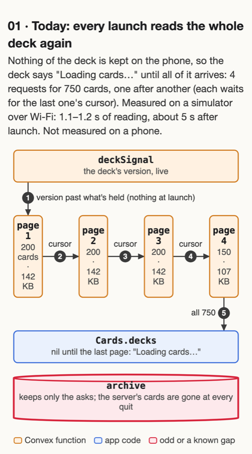
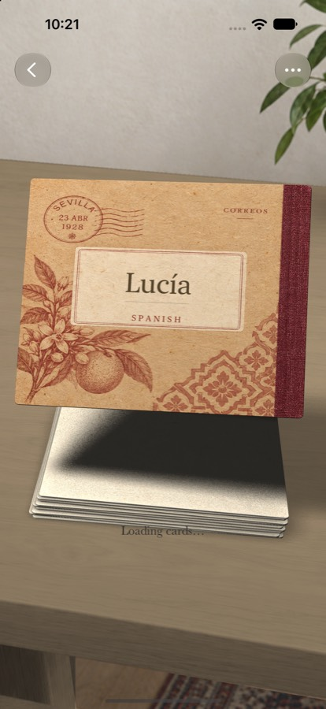

One work item, two gates
Nothing reaches main unless you approved the plan, then approved the review of exactly what merges.
EXAMPLE · LANGUAGEAPP · THE CARD DECK
1
You ask
ASKED
There's a pretty long load on the flash card deck. Does it work offline?
2
The agent draws a plan
PLANNING
How it works now, the change drawn on it, one picture per problem.

now
the change

the problem
3
You approve the plan
GATE 1
Keep the deck on the phone
3 pictures · 5 changes · round 3
Approve plan
Change…
Approval is for
plan round 3
. Change… sends your words back for round 4, which needs a new yes.
4
Workers build and film it
BUILDING
Each change filmed on the simulator, main beside the branch.
main
branch
5
An independent review
REVIEW
Astra checks the diff and the films against the plan.
PASS
✓
Deck kept on the phone
✓
Only changed cards sent
≠
Late grade: kept, not refused
(why: …)
6
You approve the merge
GATE 2
Merge “Keep the deck on the phone”
Review passed · 1 difference from the plan
Approve merge
Change…
Approval is for
commit 9f3c2a1
and
review round 2
. If the branch moves, it lapses. Change… sends your words back to the workers.
7
squircle merge
MERGED
The only way onto main. The plan, pictures, films and review go with it.
REFUSES WHEN
no approval · the branch moved after it · the review isn't PASS · a plan change has no film